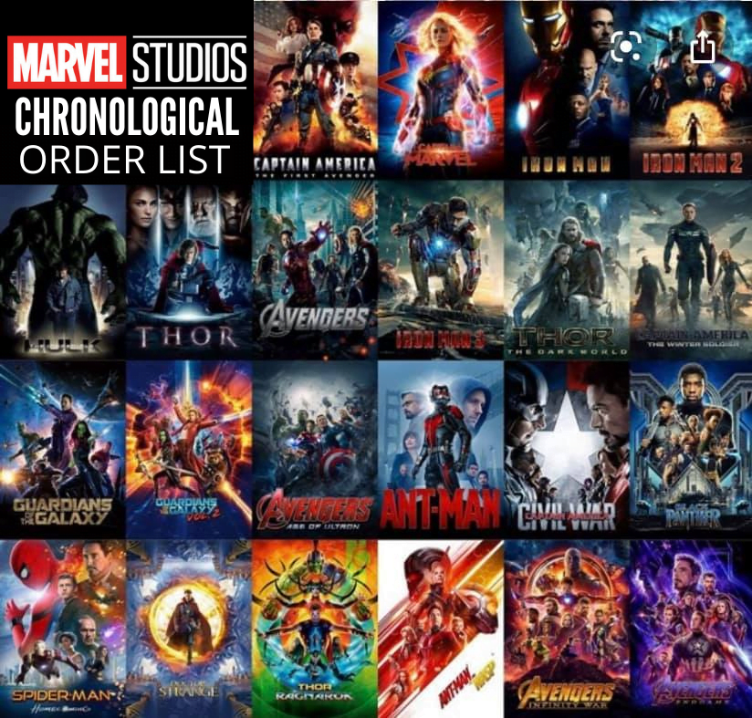
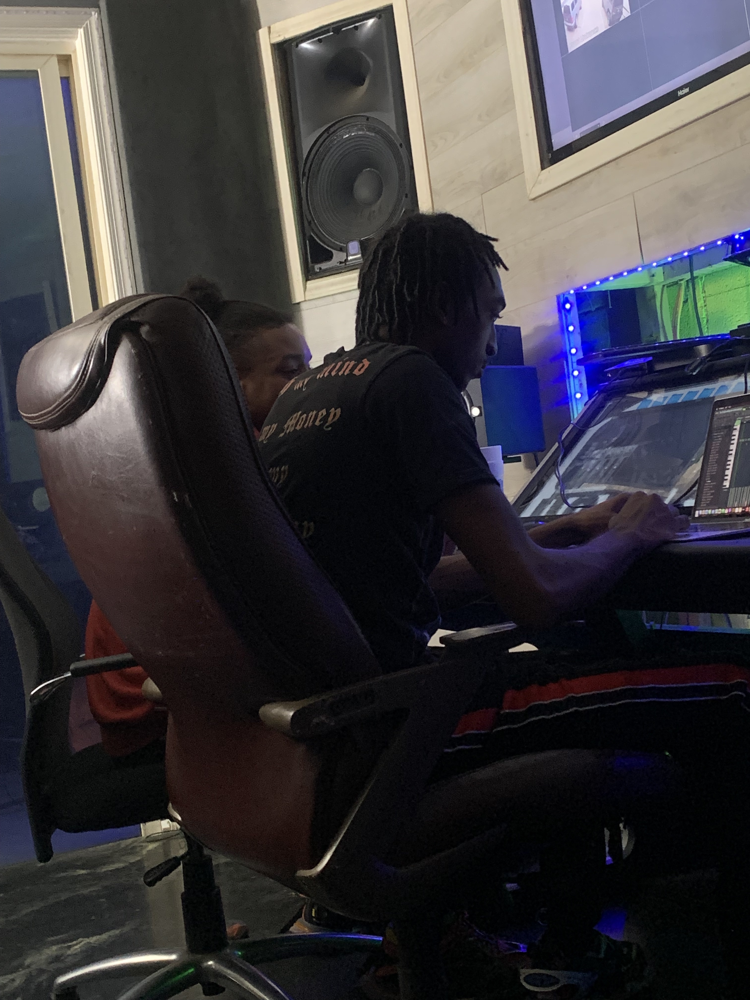
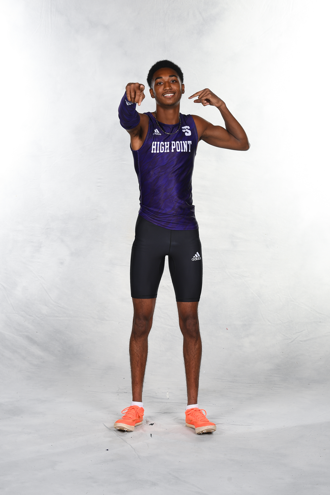

Today you will be learning a little bit about me and what I like to do.
To start, I'm from Virginia.
I'm a Marvel fan and have prolly watched all of the Avenger movies and any Marvel TV Show that is on netflix.

If I was to rank the Avengers movies of my personal top 5 favorite it would be.....
I've been producing music for about 2-3 years and work/send beats to artists such as Youngboy, Lil Baby, NoCap, and more.
BeatStore YoutubeI got into producing because I grew up in a household where my sister was a singer and my brother started rapping. I wouldn't say that I grew up in a music household, but all of my life I was involved in musical things such as piano lessons, guitar lessons, and band at my school.
I also was apart of a rock band at one point in time as the drummer and I also played drums at my church. I always had a niche from drums and was born with the gift to play the drums from having no former lessons or training. I just naturally knew how to play the drums, which is where my rythm and love for drum patterns came about.
Here are a couple of my Beats from this year If anybody wants to inqury about anything with my music, click the link below
Here is an unreleased song with youngboy that was made into another song. It was originally recorded on my beat but then he switched his vocals to another beat and released it.
Here is an unreleased song with and artist signed to Internet Money.
I'm currently on the HPU Track and Field Team as a jumper 